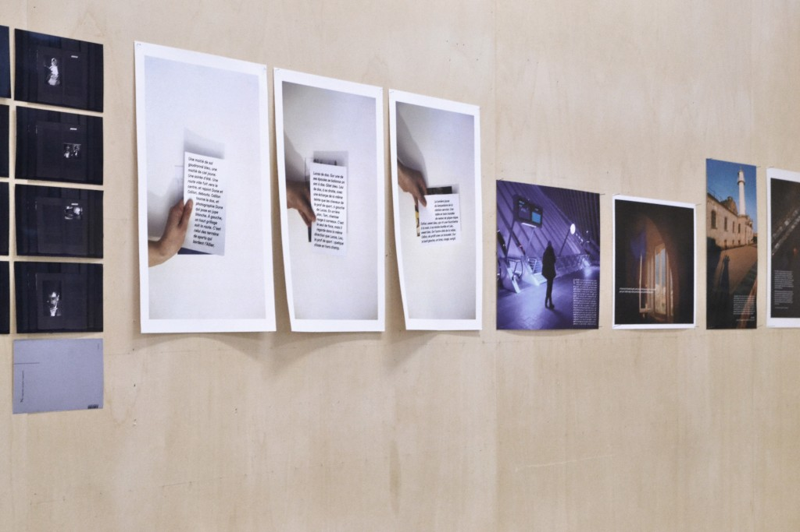
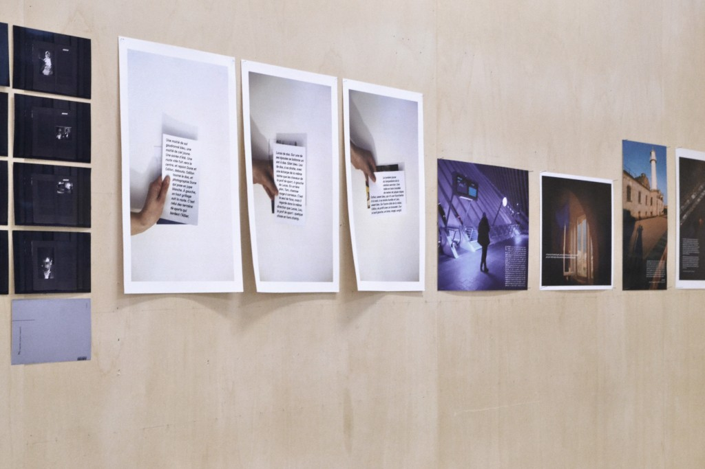
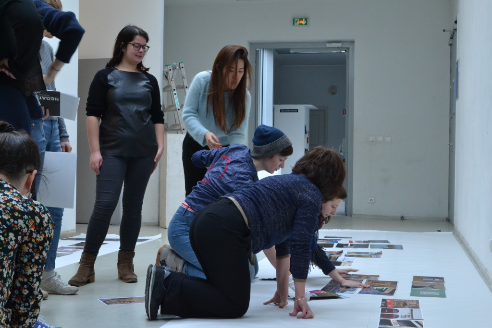

WORKSHOP PHOTO AVEC FLORENCE PARADEIS
Quatre jours pour aiguiser et amuser notre regard : c’était le défi de ce workshop photo proposé aux étudiants en année 3, sous le regard lui-même aiguisé et amusé de Florence Paradeis, photographe, plasticienne et enseignante aux Arts décoratifs de Paris.
Divisé en deux périodes (28 et 29 janvier, puis 3 et 4 mars), ce workshop était l’occasion de balayer différents aspects de l’image photographique : références, prises de vue directes, mises en scène mais aussi sélection et accrochage… Avec, comme point de départ, un thème : la lettre dans l’image.
 


Photographier la ville
Comment dialoguent les mots et la ville ? La première demi-journée, Florence nous a présenté un beau panel de photographies qui jouent avec le texte présent dans les rues. Puis, des images plein la tête, nous nous sommes dispersés dans Strasbourg et ses alentours, à la recherche des plus beaux dialogues entre les mots urbains et la grisaille hivernale.
Sélectionner
De retour à l’école, chacun a montré ce qu’il a capté, soit beaucoup, beaucoup d’images. Un tri était nécessaire. Les photos rescapées de ce grand écrémage ? Celles qui donnent une vision particulière de la ville : brute, dure, ou fantasmée, idéalisée.
Construire
Après la photographie prise sur le vif, c’est le temps de la photographie pensée dans son rapport au texte, construite, retravaillée, découpée, collée, autour de et avec lui. Ce second exercice, beaucoup plus libre, a donné lieu à des images de natures totalement différentes. Par exemple Olivia et ses captures de Google Earth qui dessinent des animaux étranges ou Héloïse et son dispositif où le texte se révèle dans un miroir.
Accrocher et présenter ses images
Nous sommes tous arrivés le second jeudi avec un bon nombre de nos images imprimées sur papier brillant, mat, impression jet d’encre ou laser, de formats variés, avec des marges plus ou moins existantes. Après un dernier tri, c’est le moment d’accrocher. On s’aperçoit vite que le Cube, une petite salle d’exposition de l’école, est trop étroit pour accueillir notre production trop importante. Nous optons alors pour les murs du patio. Toute la journée de vendredi est dédiée à l’accrochage : trouver le bon rythme entre les photos, le bon équilibre pour que chacune soit présentée à sa juste valeur.
Accrochage des productions du workshop
jusqu’au vendredi 11 mars 2016
à la cafétéria-patio de la
Haute école des arts du Rhin